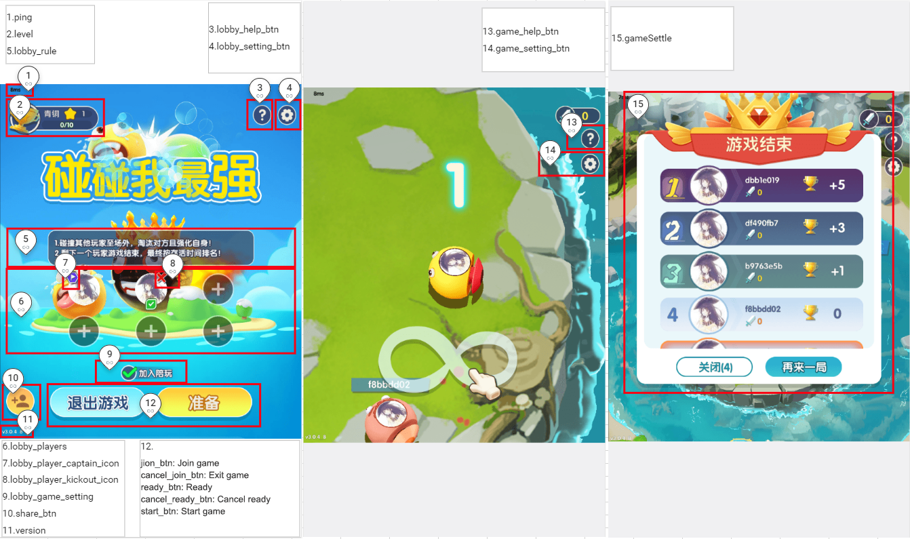

#

/**
* Obtain the game Config.
* @param handle
* @param dataJson {}
* Earliest version: V1.1.30.xx.
*/
void onGetGameCfg(ISudFSMStateHandle handle, String dataJson);
Example
handle.success(dataJsonResp);
dataJsonResp = {
"gameMode":1, // The game mode is set to 1 by default.
"ui":{
"gameSettle":{
"hide":false
},
"ping":{
"hide":false
},
"version":{
"hide":false
}
}
}
Annotation

Parameters
| Parameter | Required | Type | Description |
|---|---|---|---|
| gameMode | No | int | The game mode. (The parameter is set to 1 by default.) |
| gameCPU | No | int | The CPU power dissipation of the game. Valid values: 0: normal; 1: low. The parameter is set to 0 by default. |
| gameSoundControl | No | int | Indicates whether the game plays sound. Valid values: 0: the game plays sound; 1: the game does not play sound. The parameter is set to 0 by default. |
| gameSoundVolume | No | int | The volume level of the game. The value ranges from 0 to 100. The parameter is set to 100 by default. |
| ui | No | json | Configuration of the UI. The UI can be customized as displayed or not displayed. |
| ui.gameSettle | No | json | The post-game analysis screen. |
| ui.gameSettle.hide | No | bool | Indicates whether to hide the post-game screen. Valid values: false: show the post-game screen; true: hide the post-game screen. The parameter is set to false by default. |
| ui.ping | No | json | The ping value on the screen. |
| ui.ping.hide | No | bool | Indicates whether to hide the ping value. Valid values: false: show the ping value; true: hide the ping value. The parameter is set to false by default. |
| ui.version | No | json | The version information on screen. |
| ui.version.hide | No | bool | Indicates whether to hide the version information. Valid values: false: show the version information; true: hide the version information. The parameter is set to false by default. |
| ui.level | No | json | The ranking tier in the lobby. |
| ui.level.hide | No | bool | Indicates whether to hide the ranking tier. Valid values: false: show the ranking tier; true: hide the ranking tier. The parameter is set to false by default. |
| ui.lobby_setting_btn | No | json | The Settings/Sound Effect button in the lobby. |
| ui.lobby_setting_btn.hide | No | bool | Indicates whether to hide the Settings/Sound Effect button in the lobby. Valid values: false: show the button; true: hide the button. The parameter is set to false by default. |
| ui.lobby_help_btn | No | json | The Help button in the lobby. |
| ui.lobby_help_btn.hide | No | bool | Indicates whether to hide the Help button in the lobby. Valid values: false: show the button; true: hide the button. The parameter is set to false by default. |
| ui.lobby_players | No | json | The game seat in the lobby. |
| ui.lobby_players.custom | No | bool | Indicates whether players can join a team by tapping the game seat. Valid values: false: players are allowed to join a team by tapping the game seat based on the game processing logic; true: the game notifies the app of the user tap. The parameter is set to false by default. |
| ui.lobby_players.hide | No | bool | Indicates whether to hide the game seat area in the lobby. Valid values: false: show the game seat area; true: hide the game seat area. The parameter is set to false by default. |
| ui.lobby_player_captain_icon | No | json | The captain logo on the game seat in the lobby. |
| ui.lobby_player_captain_icon.hide | No | bool | Indicates whether to hide the captain logo on the game seat in the lobby. Valid values: false: show the captain logo; true: hide the captain logo. The parameter is set to false by default. |
| ui.lobby_player_kickout_icon | No | json | The Kick button on the game seat in the lobby. |
| ui.lobby_player_kickout_icon.hide | No | bool | Indicates whether to hide the Kick button on the game seat in the lobby. Valid values: false: show the button; true: hide the button. The parameter is set to false by default. |
| ui.lobby_rule | No | json | The description of game rules in the lobby. |
| ui.lobby_rule.hide | No | bool | Indicates whether to hide the description of game rules in the lobby. Valid values: false: show the description; true: hide the description. The parameter is set to false by default. |
| ui.lobby_game_setting | No | json | The checkbox for game settings in the lobby. |
| ui.lobby_game_setting.hide | No | bool | Indicates whether to hide the game settings checkbox in the lobby. Valid values: false: show the checkbox; true: hide the checkbox. The parameter is set to false by default. |
| ui.join_btn | No | json | The Join button. |
| ui.join_btn.custom | No | bool | Indicates whether players can join a game by tapping the Join button. Valid values: false: players are allowed to join the game by tapping the Join button based on the game processing logic; true: the game notifies the app of the user tap. The parameter is set to false by default. |
| ui.join_btn.hide | No | bool | Indicates whether to hide the Join button. Valid values: false: show the button; true: hide the button. The parameter is set to false by default. |
| ui.cancel_join_btn | No | json | The Exit button. |
| ui.cancel_join_btn.custom | No | bool | Indicates whether players can exit the game by tapping the Exit button. Valid values: false: players are allowed to exit the game by tapping the Exit button based on the game processing logic; true: the game notifies the app of the user tap. The parameter is set to false by default. |
| ui.cancel_join_btn.hide | No | bool | Indicates whether to hide the Exit button. Valid values: false: show the button; true: hide the button. The parameter is set to false by default. |
| ui.ready_btn | No | json | The Ready button. |
| ui.ready_btn.custom | No | bool | Indicates whether players can get ready by tapping the Ready button. Valid values: false: players are allowed to get ready by tapping the Ready button based on the game processing logic; true: the game notifies the app of the user tap. The parameter is set to false by default. |
| ui.ready_btn.hide | No | bool | Indicates whether to hide the Ready button. Valid values: false: show the button; true: hide the button. The parameter is set to false by default. |
| ui.cancel_ready_btn | No | json | The Cancel Ready button. |
| ui.cancel_ready_btn.custom | No | bool | Indicates whether players can cancel their ready state by tapping the Cancel Ready button. Valid values: false: players are allowed to cancel the ready state by tapping the Cancel Ready button based on the game processing logic; true: the game notifies the app of the user tap. The parameter is set to false by default. |
| ui.cancel_ready_btn.hide | No | bool | Indicates whether to hide the Cancel Ready button. Valid values: false: show the button; true: hide the button. The parameter is set to false by default. |
| ui.start_btn | No | json | The Start button. |
| ui.start_btn.custom | No | bool | Indicates whether players can enter the game by tapping the Start button. Valid values: false: players are allowed to enter the game by tapping the Start button based on the game processing logic; true: the game notifies the app of the user tap. The parameter is set to false by default. |
| ui.start_btn.hide | No | bool | Indicates whether to hide the Start button. Valid values: false: show the button; true: hide the button. The parameter is set to false by default. |
| ui.share_btn | No | json | The Share button. |
| ui.share_btn.custom | No | bool | Indicates whether players can share their team by tapping the Share button. Valid values: false: players are allowed to share their team by tapping the Share button based on the game processing logic; true: the game notifies the app of the user tap. The parameter is set to false by default. |
| ui.share_btn.hide | No | bool | Indicates whether to hide the Share button. Valid values: false: show the button; true: hide the button. The parameter is set to true by default. |
| ui.game_setting_btn | No | json | The Settings/Sound Effect button in the game. |
| ui.game_setting_btn.hide | No | bool | Indicates whether to hide the Settings/Sound Effect button in the game. Valid values: false: show the button; true: hide the button. The parameter is set to false by default. |
| ui.game_help_btn | No | json | The Help button in the game. |
| ui.game_help_btn.hide | No | bool | Indicates whether to hide the Help button in the game. Valid values: false: show the button; true: hide the button. The parameter is set to false by default. |
| ui.game_settle_close_btn | No | json | The Close button on the post-game screen. |
| ui.game_settle_close_btn.hide | No | bool | Indicates whether to hide the Close button. Valid values: false: show the button; true: hide the button. The parameter is set to false by default. |
| ui.game_settle_close_btn.custom | No | bool | Indicates whether players can close the post-game screen and go back to the lobby by tapping the Close button on the post-game screen. Valid values: false: players are allowed to close the post-game screen and go back to the lobby by tapping the Close button based on the game processing logic; true: the game notifies the app of the user tap. The parameter is set to false by default. |
| ui.game_settle_again_btn | No | json | The Play Again button on the post-game screen. |
| ui.game_settle_again_btn.hide | No | bool | Indicates whether to hide the Play Again button. Valid values: false: show the button; true: hide the button. The parameter is set to false by default. |
| ui.game_settle_again_btn.custom | No | bool | Indicates whether players can play again by tapping the Play Again button on the post-game screen. Valid values: false: the post-game screen is closed and players go back to the lobby with a Ready state; true: the game notifies the app of the user tap. The parameter is set to false by default. |
| ui.game_bg.hide | No | bool | Indicates whether to hide the background images, including the lobby and the game scene. Valid values: false: show the images; true: hide the images. The parameter is set to false by default. |
| ui.block_change_seat | No | json | The feature to disable the seat change. (Currently supported by Ludo only.) |
| ui.block_change_seat.custom | No | bool | Indicates whether to disable the seat change feature. Valid values: false: player seats can be changed; true: player seats cannot be changed. The parameter is set to false by default. |
| ui.game_setting_select_pnl | No | json | The feature to disable the game mode setting panel |
| ui.game_setting_select_pnl.hide | No | bool | Indicates whether to disable the game mode setting panel Valid values: false: show; true: hide, The parameter is set to false by default |
| ui.game_managed_image | No | json | The feature to disable the auto managed icon show on player |
| ui.game_managed_image.hide | No | bool | Indicates whether to disable auto managed icon show on player Valid values: false: show; false: hide, The parameter is set to false by default |
| ui.game_table_image | No | json | The feature to disable the game table image |
| ui.game_table_image.hide | No | bool | Indicates whether to disable the game table image Valid values: false: show; false: hide, The parameter is set to false by default |
| ui.game_countdown_time | No | json | The feature to disable the game countdown |
| ui.game_countdown_time.hide | No | bool | Indicates whether to disable the game countdown Valid values: false: show; false: hide, The parameter is set to false by default |
| ui.game_selected_tips | 否 | json | The feature to disable th prompt text of play method selected in the game (Currently supported by Ludo only.) |
| ui.game_selected_tips.hide | 否 | bool | Indicates whether to disable the prompt text of play method selected in the game Valid values: false: show; false: hide, The parameter is set to false by default |
Response parameters
{
"gameMode":1,
"gameCPU": 0,
"gameSoundControl": 0,
"gameSoundVolume": 100,
"ui":{
"gameSettle":{
"hide":false
},
"ping":{
"hide":false
},
"version":{
"hide":false
},
"level":{
"hide":false
},
"lobby_setting_btn":{
"hide":false
},
"lobby_help_btn":{
"hide":false
},
"lobby_players":{
"custom": false,
"hide":true
},
"lobby_player_captain_icon":{
"hide":false
},
"lobby_player_kickout_icon":{
"hide":false
},
"lobby_rule":{
"hide":false
},
"lobby_game_setting":{
"hide":false
},
"join_btn":{
"custom":false,
"hide":false
},
"cancel_join_btn":{
"custom":false,
"hide":false
},
"ready_btn":{
"custom":false,
"hide":false
},
"cancel_ready_btn":{
"custom":false,
"hide":false
},
"start_btn":{
"custom":false,
"hide":false
},
"share_btn":{
"custom":false,
"hide":true
},
"game_setting_btn":{
"hide":false
},
"game_help_btn":{
"hide":false
}
"game_settle_close_btn": {
"hide": false,
"custom": false
},
"game_settle_again_btn": {
"hide": false,
"custom": false
},
"game_bg": {
"hide": false
},
"block_change_seat": {
"custom": false
},
"game_setting_select_pnl": {
"hide": false
},
"game_managed_image": {
"hide": false
},
"game_table_iamge": {
"hide": false
},
"game_countdown_time": {
"hide": false
},
"game_selected_tips": {
"hide": false
}
}
}